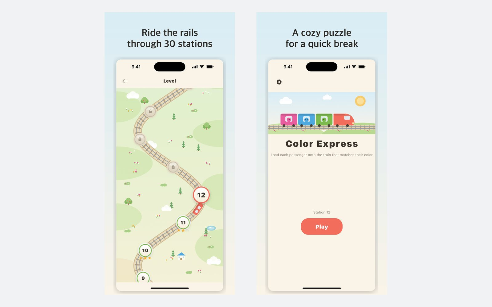

One rule, and it is strict
A straight, unbroken line to the edge of the board — up, down, left or right. Turning a corner is not a path. Everything in the game follows from that one sentence.
A coloured train stops with three seats. Tap the passengers whose colour matches and they board — but only if one straight line out is completely clear. No timer, no lives, no sign-up.

The idea
Matching colours takes a second; getting the passenger out takes the thought. A passenger can leave only along a straight line — up, down, left or right — that runs clear to the edge of the board. Corners do not count. So the board is read from the outside in: clear the edge to open the row behind it, and the one behind that.
What's in it
A straight, unbroken line to the edge of the board — up, down, left or right. Turning a corner is not a path. Everything in the game follows from that one sentence.
Every layout is generated and then checked by a solver: it must be winnable, and it must be unwinnable without using the bench. Boards that fail either test are thrown away, not shipped.
Each of the 70 levels holds six verified layouts and picks one at random — including when you replay it. The level you failed is not the level you retry.
Wrong-coloured passengers wait on a bench with very few slots. Fill it with no way out and the level is over. Later levels give you fewer slots, not more passengers.
The rating counts how many passengers you had to park on the bench — not points. Three stars means you barely used it.
Think for a second or for a minute. Nothing counts down, nothing runs out, and nothing asks you to come back tomorrow.

Where it came from
It began in July 2026 as a colour-matching prototype in Flutter and Flame: passengers on a grid, a lift that took three at a time.
The rule changed almost immediately. Reaching the exit used to be a maze search, which made the board impossible to read at a glance. Replacing it with a single straight line to the edge made every move visible — and the puzzle far harder to plan.
The lift became a train, the grid grew to seven colours, and the levels stopped being written by hand: a solver now builds and checks all 70 levels, six layouts apiece.
Privacy
No account, no cloud, no leaderboard to upload to. Your progress is a handful of numbers in the device's own storage, and it is deleted with the app. The game is free and carries ads, which means Google AdMob collects the usual advertising identifier and device information — all of it written out in the privacy policy.
Free, and it works offline — the network is only used for ads. Coming to the App Store and Google Play.